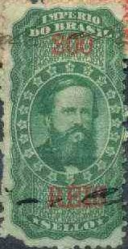
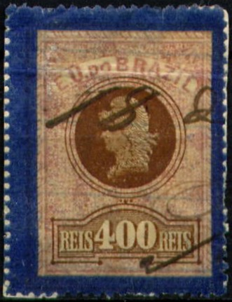
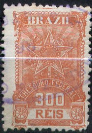
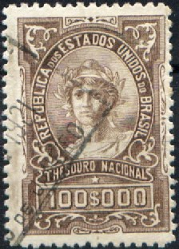

Return To Catalogue - Brazil fiscal stamps, part 2
Note: on my website many of the
pictures can not be seen! They are of course present in the
catalogue;
contact me if you want to purchase it.
For more fiscal stamps of Brazil, click here.

In this design exist:
In the colour green (with red value): 200 r, 400 r, 600 r and 800
r.
In the colour orange (with blue value) in a larger size: 1000 r,
2000 r, 3000 r, 4000 r, 5000 r, 6000 r, 7000 r, 8000 r, 9000 r,
10000 r, 11000 r, 12000 r, 13000 r, 14000 r, 15000 r, 16000 r,
17000 r, 18000 r, 19000 r and 20000 r.
Most of these stamps exist perforated and rouletted (the 200 r
even exists with vertical perforation and horizontal rouletted).


The following values exist: 100 r light brown, 200 r light brown (three types), 400 r light brown (2 types), 500 r light brown. In a larger size: 1000 r light brown (2 types), 2000 r light brown (2 types), 5000 r light brown, 10000 r lilac and 20000 r lilac.
(postally used fiscal stamp)
The above fiscal stamp is used postally. In 1884 a new type with emperor facing left was issued in the values 500 r lilac and 10000 r lilac (larger size).

In this design (borders different for each value) exist: 2000 r, 3000 r, 4000 r and 5000 r (all in lilac colour).

The values 10 r blue (value red), 20 r green (value red) and 50 r red (value black) were issued. Two types of the value inscription (small and large) exist for the values 10 r and 20 r.

(Images obtained thanks to Rainer Schulz)
Many values exist, also with blue border. I have seen 20 r red and lilac (blue border), 100 r black and lilac (black border), 300 r green and lilac (blue border), 400 r brown and lilac (blue border), 400 r brown and lilac and 500 r violet and lilac.


(Images obtained thanks to Rainer Schulz)
I've seen the value 200 r lilac (in two types, see above). More stamps in a similar design could exist.


(Images obtained thanks to Rainer Schulz)
In this design were issued (from 1890 to 1903):
Smallest size: 100 r lilac, 200 r violet, 400 r
orange, 400 r brown, 400 r red, 400 r violet, 500 r green, 500 r
yellow and 500 r olive;
Larger size: 1000 r yellow, 1000 r green, 2000 r
lilac, 2000 r brown, 2000 r green, 2000 r red, 3000 r red, 3000 r
green, 3000 r blue, 4000 r blue, 4000 r green, 4000 r red, 5000 r
green, 5000 r blue, 5000 r violet, 10000 r red (two shades),
10000 r violet, 10000 r orange, 15000 r olive, 15000 r violet,
15000 r red, 20000 r lilac, 20000 r violet and 20000 r brown;
Largest size: 50000 r red (two shades) and 50000
r violet.

(Image obtained thanks to Rainer Schulz)
I've only seen the value 200 r brown with yellowish brown background pattern.

(Image obtained thanks to Rainer Schulz)
Only the value 100 r red was issued.

(Image obtained thanks to Rainer Schulz)
The values 300 r green (with yellow background pattern) and 300 r brown (1903) exist.


In this design exists: 100 r red, 200 r orange, 300 r blue, 300 r red, 400 r red and 500 r brown. In a slightly larger size: 1000 r blue, 1000 r orange, 2000 r yellow, 3000 r green, 4000 r red, 4000 r olive, 5000 r green and 5000 r violet. In the largest size: 10000 r red, 15000 r violet, 20000 blue, 20000 r brown and 50000 r green. The 300 r has a slightly different design (see image above).
The following values were issued: 10 r red, 20 r red and 50 r blue. In a slightly larger design: 100 r green and 300 r green.

(Images obtained thanks to Rainer Schulz)
I have seen the values: 100 r red, 200 r blue, 300 r orange and 500 r green. With ornamented border all around the stamp: 1000 r brown, 2000 r red, 3000 r green, 4000 r lilac, 5000 r brown. In a slightly larger design: 10000 r orange and 50000 r brown.

(Image obtained thanks to Rainer Schulz)
In the above design I have seen the values: 1$000 blue, 2$000 red, 3$000 brown, 4$000 lilac, 5$000 orange and 50$000 green. Other values might exist.
(Image obtained thanks to Rainer Schulz)
I have seen the values 100 r green, 300 r red, 400 r brown, 500 r orange and 600 r lilac. In the same design, but with inscription 'LOTERIAS' I have seen the value 100 r red. In the same design, but with inscription 'COLLECTORIAS FEDERAES DO INTERIOR' I have seen the value 600 r blue.
(Image obtained thanks to Rainer Schulz)
I've only seen the value 20$000 olive in this particular design.
(Image obtained thanks to Rainer Schulz)
I have only seen the value 300 r green in this design.
(Image obtained thanks to Rainer Schulz)
In this design I have seen: 100 r red, 300 r brown, 500 r violet, 600 r olive, 1000 r red, 2000 r yellow, 4000 r orange and 20000 r brown.
(Image obtained thanks to Rainer Schulz)
In this design I have seen: 2$000 blue and 4$000 violet.

I've only seen the value 100$000 brown in this design.
Many stamps in a small design were issued in various designs after 1920, example:
(Example of a fiscal stamp of 1927-1928, image obtained thanks to
Rainer Schulz)
{kind=link}